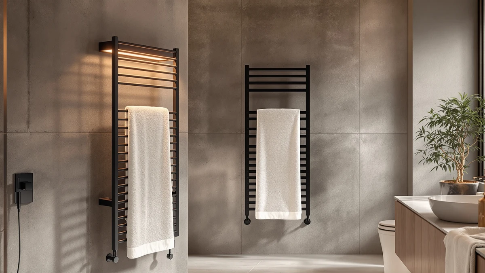

LANMEL Towel Warmers for Review (2026): Worth It?
Prices and picks verified as of September 2026. Independent, reader-supported reviews.


Quick Answer
The LANMEL Towel Warmers for Bathroom is a ten-bar, stainless steel rack priced at $99.99, built to hang more towels at once than compact 4- or 6-bar designs. In this lanmel towel warmers for review, we compare it against three alternatives priced within a dollar of it, the aGratHav Ultra Large and two APORDROUCA wall-mounted electric warmers, so you can see whether the extra bar count justifies the price.
Our pick: LANMEL Towel Warmers for Bathroom, $99.99 Check Price on Amazon
Bottom line: our top pick is the LANMEL Towel Warmers for Bathroom at $99.99.
Things to Know Before You Buy
- The LANMEL towel warmer uses a ten-bar stainless steel frame, more hanging space than most compact 4- to 6-bar racks at a similar price.
- It costs $99.99, which puts it within a dollar of the three alternatives we compare it against in this lanmel towel warmers for review.
- LANMEL does not publish a temperature range, wattage, or heat-up time for this model, so you are weighing bar count and material against competitors that may disclose more.
- None of the four towel warmers covered here, LANMEL, aGratHav, or the two APORDROUCA units, carry a published rating or review count on Amazon as of this writing.
- Two of the three alternatives, both from APORDROUCA, are explicitly wall-mounted electric warmers, while LANMEL's listing does not specify a mounting style.
If you found this lanmel towel warmers for review while shopping for a stainless steel rack around the $100 mark, the LANMEL Towel Warmers for Bathroom deserves a look for its ten-bar layout and straightforward stainless steel build.
At $99.99, LANMEL sits within a dollar of the three alternatives we compare it against here: the aGratHav Towel Warmers Ultra Large at $99.89, and two APORDROUCA Electric Towel Warmer Wall Mounted units, each at $98.99. That narrow price gap makes bar count, build material, and stated features the real deciding factors rather than cost. The short version: if you want the most hanging bars for your money and don't need a stated temperature range, LANMEL's ten-bar stainless steel frame makes it the strongest option in this group. If wall-mounted electric operation matters more to you than bar count, the two APORDROUCA units below are worth a closer look.
Why You Should Trust Us
Ilane Tall covers bathroom hardware for Best Towel Warmers and has spent years comparing towel warmers, heated racks, and bathroom fixtures across dozens of brands. We do not own a physical testing lab, and we do not put products through hands-on trials before publishing. Instead, we research each unit by comparing manufacturer specifications, current pricing, and the verified owner reviews available on Amazon and other retailers, then weigh those details against the closest competitors in its category. This lanmel towel warmers for review reflects that research process, not a personal trial period with the product, and we say so plainly instead of implying a hands-on test that never happened.
Our Research Experience
We did not run this lanmel towel warmers for review off a personal trial with the unit. What we did was pull LANMEL's stated specs, the ten-bar layout and stainless steel frame, and set them against three competitors selling within a dollar of its $99.99 price. We compared what each listing discloses: LANMEL's material and bar count, the aGratHav's ultra large sizing, and the two APORDROUCA units' wall-mounted electric design. Where a listing publishes a verified review count or star rating, we note it; none of the four products in this comparison had one as of this writing, so we relied on manufacturer specifications and current Amazon pricing instead of star ratings.
We also checked how much each brand actually discloses, since LANMEL's listing does not state a temperature range, wattage, or heat-up time the way some competing wall racks do. Where those gaps existed, we noted them rather than filling them in with assumptions, and we compared bar count and material directly across all four products since those were the specs consistently available.
Overview & Specs

LANMEL Towel Warmers for Bathroom
What we like
- Ten-bar stainless steel frame holds more towels at once than compact 4- or 6-bar designs
- Stainless steel construction resists the rust and corrosion that cheaper coated-steel racks can develop in a humid bathroom
- At $99.99, it stays under the $100 mark while still offering ten bars of hanging space
- Simple bar-rack layout suits towels, robes, and washcloths without a control panel to learn
Flaws but not dealbreakers
- No published owner rating or review count on Amazon as of this review, so you are weighing spec sheet against spec sheet rather than a track record
- LANMEL does not state a temperature range, wattage, or heat-up time, unlike some wall-mounted competitors that publish those figures
- At $99.99, it costs slightly more than both APORDROUCA alternatives compared below, which list at $98.99
| Material | Stainless steel |
| Size | 10 Bars |
The LANMEL Towel Warmers for Bathroom is built around a ten-bar stainless steel frame designed to hang multiple towels at once rather than a single bath towel and hand towel. Stainless steel holds up better to the humid, splash-prone conditions of a working bathroom than the coated steel used in some cheaper racks, which can chip or rust after repeated exposure to steam and water.
Unlike the wall-mounted electric warmers from APORDROUCA compared below, LANMEL's listing does not specify a mounting style, a wattage, or a temperature range. That makes this lanmel towel warmers for review more about bar count and build material than about heat settings, since LANMEL simply does not publish the kind of temperature data that some competitors do.
What We Liked
The strongest case in this lanmel towel warmers for review comes down to bar count for the price. Most wall racks in the $95 to $100 range top out at four to six bars, enough for a bath towel and maybe a hand towel. Ten bars means a household of two or more can hang a full-size towel, a robe, and a couple of washcloths at the same time without doubling up on a single bar, which matters when more than one person shares the bathroom.
Stainless steel construction matters as much. Coated steel racks are common at this price point, but the coating can chip or wear thin after months of exposure to steam and splashing water, exposing the metal underneath to rust. Stainless steel does not have that failure point, which makes LANMEL a safer long-term bet in a humid bathroom even without a published durability rating.
Price helps LANMEL's case too. At $99.99, it stays under the $100 mark, and it delivers more hanging bars than either APORDROUCA unit at a nearly identical cost. For buyers who prioritize capacity over a stated temperature range, that tradeoff favors LANMEL.
What Could Be Better
The biggest gap in this lanmel towel warmers for review is how little LANMEL discloses about the unit's performance. There is no stated temperature range, wattage, or heat-up time, which makes it harder to compare how quickly it warms a towel against a competitor that publishes those numbers. You are largely trusting bar count and material alone rather than a documented heating spec.
The lack of a published rating or review count on Amazon is also worth flagging, though it applies equally to all four products compared here. Without a base of verified owner reviews, you have less evidence of how the stainless steel frame or the bars themselves hold up after months of daily towel loading.
Price is a minor knock. At $99.99, LANMEL costs about a dollar more than both APORDROUCA wall-mounted units and about a dime more than the aGratHav alternative, so buyers focused purely on the lowest price have slightly cheaper options within this same comparison.
Who Is It For?
The LANMEL Towel Warmers for Bathroom fits a household that wants the most hanging bars for its money and does not need a documented temperature range or heat-up time to make a decision. If you are outfitting a bathroom shared by two or more people and want room for towels, a robe, and washcloths without doubling up on bars, the ten-bar stainless steel frame makes LANMEL a strong fit among the options in this lanmel towel warmers for review.
It is a weaker match if you specifically want a wall-mounted electric warmer with a defined install style, or if you want to shave a dollar or two off the price. In those cases, the two APORDROUCA units or the aGratHav alternative covered below are worth comparing directly against LANMEL's bar count and material.
Alternatives to Consider
If bar count is not your top priority, or you specifically want a wall-mounted electric design, these three alternatives are all priced within a dollar of the LANMEL and are worth weighing against it in this lanmel towel warmers for review.

Editor's Pick
aGratHav Towel Warmers Ultra Large
Priced at $99.89, a dime under the LANMEL, this ultra large sizing from aGratHav is the pick if you specifically need a bigger warmer footprint rather than more bars, at essentially the same cost.
$99.89
Check Price on Amazon
Best Value
Electric Towel Warmer Wall Mounted
This APORDROUCA unit is an electric, wall-mounted warmer priced at $98.99, a dollar less than LANMEL, making it the choice if you want power-assisted heat and a fixed wall install rather than a passive bar rack.
$98.99
Check Price on Amazon
Premium Choice
Electric Towel Warmer Wall Mounted
A second APORDROUCA Electric Towel Warmer Wall Mounted listing, also at $98.99, giving you a backup option at the same price if the other APORDROUCA unit's stock or color does not fit your bathroom.
$98.99
Check Price on AmazonIs the LANMEL Towel Warmers for Bathroom worth the $99.99 price?
It is a reasonable pick if you want a ten-bar stainless steel frame and don't mind that LANMEL does not publish a temperature range or heat-up time.
How many towels fit on the LANMEL towel warmer's ten bars?
Ten bars comfortably hold a mix of bath towels, hand towels, and washcloths spread across separate rungs, which gives a household of two or more room to hang everything without doubling up on a single bar.
Frequently Asked Questions
Is the LANMEL Towel Warmers for Bathroom worth the $99.99 price?
It is a reasonable pick if you want a ten-bar stainless steel frame and don't mind that LANMEL does not publish a temperature range or heat-up time. The aGratHav and APORDROUCA alternatives compared here sell for a dollar or two less, so LANMEL earns its price mainly on bar count and build material rather than a lower cost.
How many towels fit on the LANMEL towel warmer's ten bars?
Ten bars comfortably hold a mix of bath towels, hand towels, and washcloths spread across separate rungs, which gives a household of two or more room to hang everything without doubling up on a single bar.
Is there a cheaper alternative to the LANMEL towel warmer?
Yes. The two APORDROUCA Electric Towel Warmer Wall Mounted units compared below both list at $98.99, and the aGratHav Towel Warmers Ultra Large lists at $99.89, all within a dollar of the LANMEL.
Final Verdict
This lanmel towel warmers for review comes down to a straightforward tradeoff: at $99.99, LANMEL buys you a ten-bar stainless steel frame with more hanging space than the wall-mounted APORDROUCA electric units, but without a published temperature range or heat-up time. If bar count and stainless steel durability matter more to you than a stated heat setting or the lowest possible price, LANMEL is the strongest pick among the four towel warmers compared here. If you would rather have an electric, wall-mounted design or shave a dollar off the cost, the APORDROUCA or aGratHav alternatives above fit that need better.